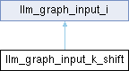

- Generated by
 1.16.1
1.16.1
|
Neura
Gesture and voice-controlled desktop assistant
|

Public Member Functions | |
| llm_graph_input_k_shift (const llama_kv_cache *kv_self) | |
| void | set_input (const llama_ubatch *ubatch) override |
| Public Member Functions inherited from llm_graph_input_i | |
| virtual bool | can_reuse (const llm_graph_params ¶ms) |
Public Attributes | |
| ggml_tensor * | k_shift |
| const llama_kv_cache * | kv_self |
Additional Inherited Members | |
| Protected Attributes inherited from llm_graph_input_i | |
| int | debug = 0 |
|
overridevirtual |
Implements llm_graph_input_i.